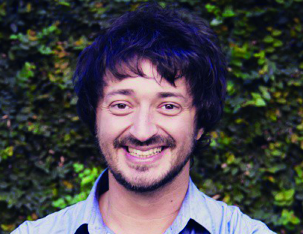

Martín Yeza
“No pienso sobre el rol de la juventud.”

Martín tiene 29 años. Es de Pinamar, y precandidato a intendente de esa ciudad por el PRO
--¿Cómo te iniciaste en la política?
-A los 15 años, en medio de la crisis de 2001, empecé a participar en el centro de estudiantes de mi escuela. Me inicié políticamente en el peronismo, dentro de lo que fue el Peronismo Federal en 2008 cuando nació. En 2010 me corrí del Peronismo Federal y empecé a trabajar junto a Mauricio Macri y María Eugenia Vidal.
-¿Cuál es para vos el rol de la juventud?
-No pienso particularmente sobre el rol de la juventud sino sobre el de la ciudadanía. La participación política es un derecho y soy de la idea de que uno lo tiene que ejercer y llevarlo a la práctica.
-¿Cuáles son las problemáticas que enfrentan los jóvenes de PInamar?
-Los problemas que tienen los jóvenes en Pinamar, al igual que los adultos que viven acá, son exactamente los mismo que los que tienen los de la provincia y los del país.
-¿Qué políticas rescatas de las que se han hecho a lo largo de los últimos años desde el Estado?
-A nivel provincial la gestión fue muy mala, se desmantelaron los centros de prevención de adicciones a medida que avanzó el narcotráfico. A nivel nacional lo que veo es un proceso político en el que se convocó al compromiso de la ciudadanía y que se movilizó una parte importante de la juventud , pero creo que una deuda de los últimos años es la crisis de la calidad educativa.